Parteneri de Suflet
În spatele fiecărui blănos salvat stă o rețea de oameni și afaceri din Timișoara care cred, la fel ca noi, că o comunitate se măsoară prin grija față de cei mai vulnerabili membri ai ei. Le mulțumim din inimă partenerilor noștri — fără sprijinul lor constant, poveștile de reușită pe care le vedeți aici nu ar fi fost posibile.

Yamy Bistro
Un bistro micuț, local și primitor unde gustul bun și ingredientele fresh se împletesc cu dorința de a sprijini inițiativele frumoase ale comunității noastre.

High Class Studio Fit Center
Centru de fitness cu aparate EMS și antrenori personali, dedicat unui stil de viață sănătos în Timișoara. O echipă activă care alege să susțină cu energie cauzele blănoase.

Alisz Pet Spa • Toaletaj canin
Salon profesionist de toaletaj canin, unde răsfățul și îngrijirea animăluțelor sunt pe primul loc. Partenerul ideal care înțelege perfect dragostea pentru blănoși.

Pizzeria Giovanna
Pizzeria Giovanna, cunoscută în Timișoara de peste 20 de ani a primit un makeover și un meniu nou! Ne bucurăm să îi avem alături și vă invităm să descoperiți pasiunea lor culinară.
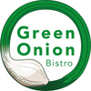
Green Onion Bistro
Green Onion Bistro este destinația ideală din Timișoara pentru iubitorii de fripturi și preparate internaționale. Într-o atmosferă relaxată și cu muzică bună, vă invităm să savurați de la gustări rapide până la experiențe culinare rafinate, completate de deserturi delicioase. Suntem pregătiți să vă găzduim evenimentele sau să vă livrăm gustul nostru direct acasă prin serviciul de takeaway.
The Wine Guy
Într-un oraș care știe să aprecieze lucrurile bine făcute, The Wine Guy s-a impus ca o adevărată destinație pentru cunoscătorii de vin din Timișoara. Cu o selecție atent curatoriată de etichete românești și internaționale, aici pasiunea pentru vinificație se întâlnește cu rafinamentul degustării.
X-Sport Bikes
De aproape două decenii, X-Sport Bikes reprezintă un reper pentru pasionații de ciclism din Timișoara. De la biciclete de munte și road bikes, până la modele electrice și pliabile, magazinul reunește branduri consacrate precum Scott, Focus și Orbea, alături de o expertiză tehnică desăvârșită în consultanță și service.
Împreună cu ei fiecare cauză bună prinde viteză!
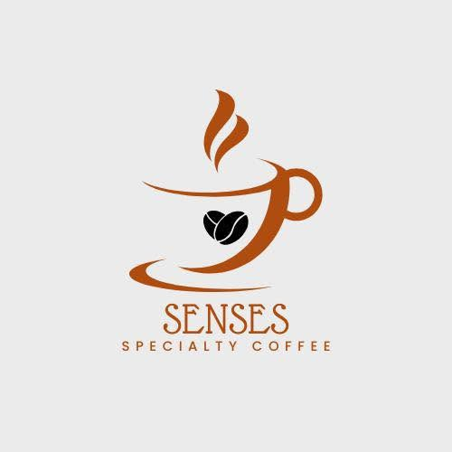
Senses Specialty Coffee
Plasat cu eleganță pe strada Matei Corvin, Senses Specialty Coffee a devenit un mic sanctuar pentru cei care înțeleg că o cafea bună nu este doar o băutură, ci un ritual. Fiecare cafea este pregătită cu atenție și suflet, într-o atmosferă caldă și primitoare, unde timpul parcă își încetinește pasul.
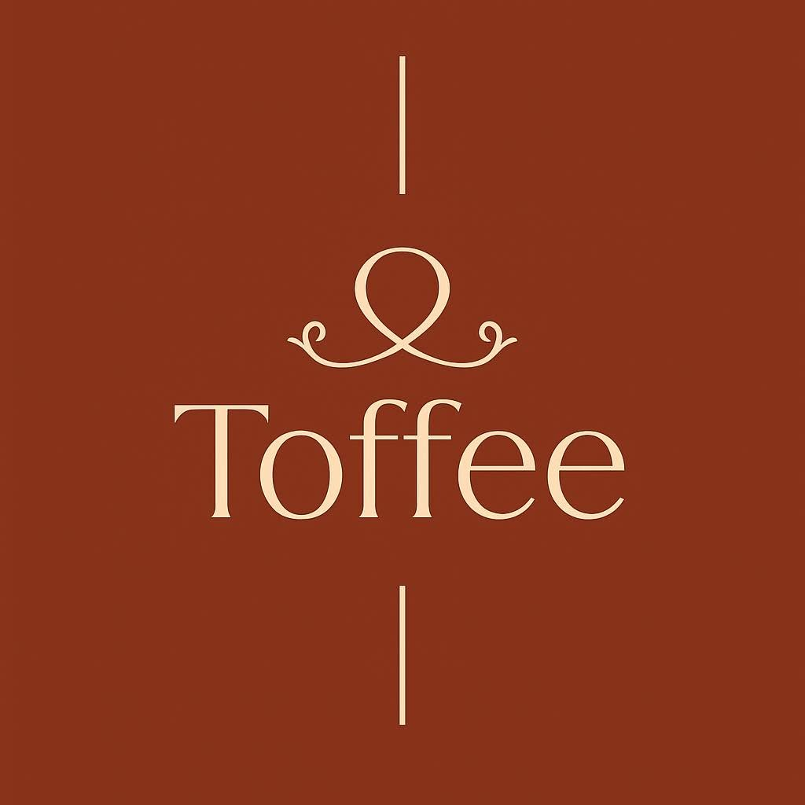
Toffee Coffee
Toffee Coffee poartă în nume o poveste plină de suflet: cea a lui Toffee, cățelul cuplului care a pus bazele acestei cafenele. Ce a pornit ca un gest de dragoste pentru Toffee a devenit un loc modern și primitor, unde fiecare vizită e întâmpinată cu aceeași căldură cu care Toffee își întâmpină stăpânii acasă.
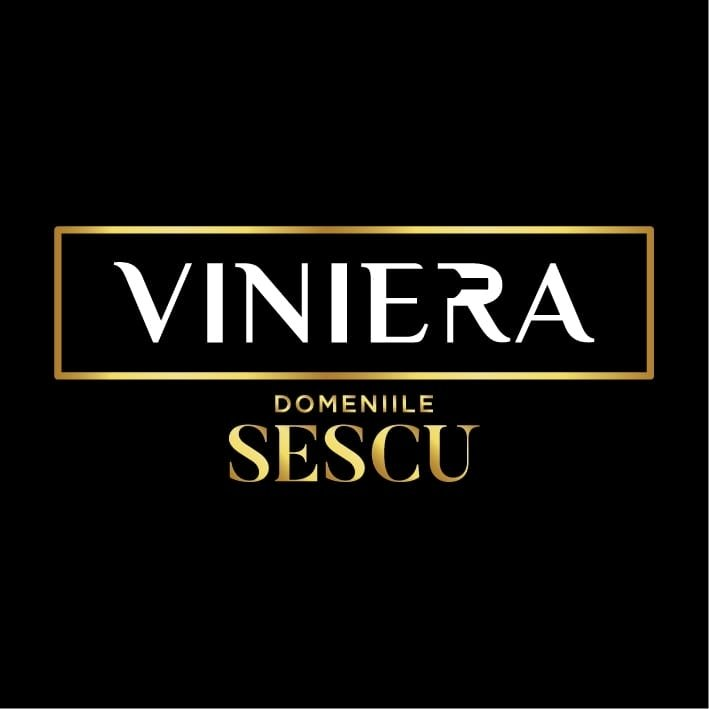
Viniera by Domeniile Sescu
Pe dealurile liniștite din Herneacova, o familie fără moștenire de vii dar cu multă dăruire a pornit să crească vița de vie în agricultură ecologică, fără pesticide sau intervenții agresive. Așa s-au născut vinurile Viniera – povești turnate în pahar, maturate cu răbdare de niște producători mici cu ambiții mari, chiar la porțile Timișoarei.
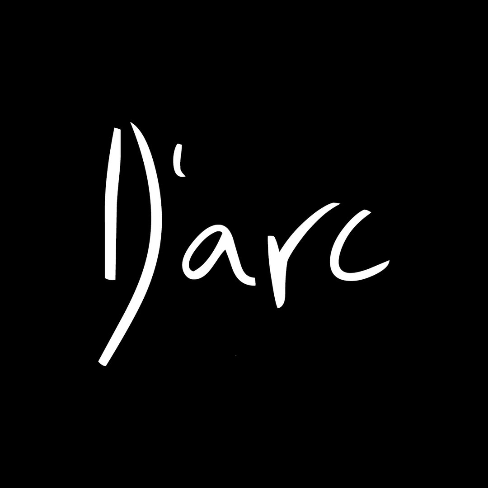
D'arc Timișoara
De peste două decenii, D'arc este unul dintre reperele Pieței Unirii – un loc unde cafeaua de dimineață, terasa la malul Begăi și petrecerile de noapte se întâlnesc sub același acoperiș. Concerte, evenimente și oameni dragi, într-una dintre cele mai vechi și îndrăgite locații din centrul vechi al Timișoarei.
BeautyBox
Chiar în inima Timișoarei, în Piața Mărăști, echipa BeautyBox îmbină aparatura de ultimă generație cu o atmosferă caldă și relaxantă. De la bronzare și epilare definitivă, până la coafură, styling de unghii și tratamente faciale, fiecare vizită e gândită să te facă să te simți răsfățată și încrezătoare.
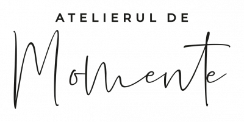
Atelierul de Momente
Un atelier din Timișoara care livrează bucurie în cutie: lumânări parfumate, ceară aromată, cutii cadou personalizate și tot felul de mici răsfățuri pentru casă. Fiecare produs e gândit cu grijă, pentru acele momente în care merită să te oprești puțin și să simți parfumul din jurul tău.
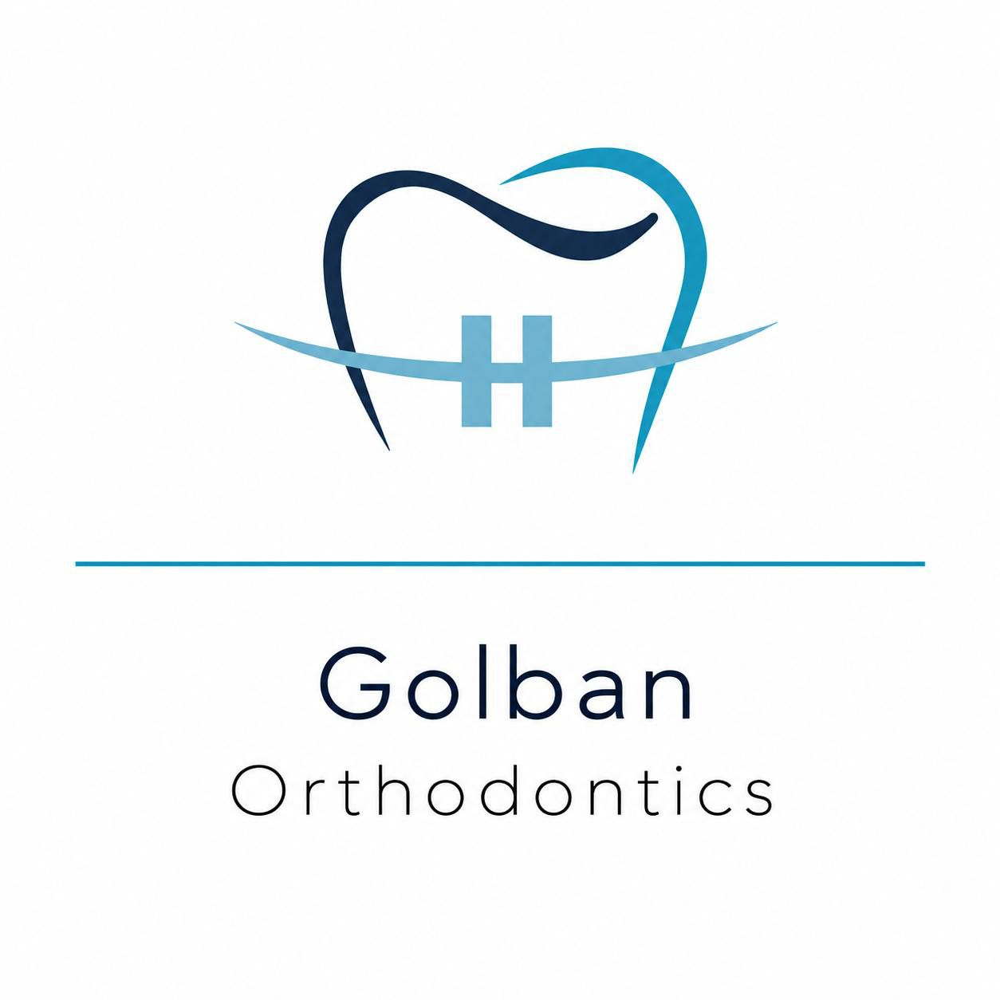
Golban Orthodontics
Dr. Denisa Golban și Dr. Gloria Golban aduc în Timișoara aceeași grijă și blândețe cu care tratăm și noi comunitatea patrupedelor — de data asta, pentru zâmbete. Specialiste în ortodonție și ortopedie dento-facială, activează la Clinica Feroiu și în colaborare cu alte clinici din oraș, transformând tratamentele ortodontice într-o experiență calmă și pe măsura fiecărui pacient, de la mic la mare.
Blink Optic
Într-un spațiu modern din inima Timișoarei, Blink Optic aduce laolaltă branduri de eyewear internaționale — de la designul artistic al lui Face à Face, până la minimalismul scandinav semnat Prodesign Denmark. Consiliere personalizată și o experiență optică gândită să reflecte personalitatea fiecărui client.
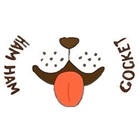
Ham Ham Cocket
Salon de toaletaj canin și felin în Timișoara, unde fiecare blăniță e tratată cu grijă și răbdare. De la tuns și coafat la ozonoterapie și spa pentru animale, echipa Ham Ham Cocket oferă și servicii de taxi pentru patrupezi, într-o atmosferă prietenoasă și profesionistă.
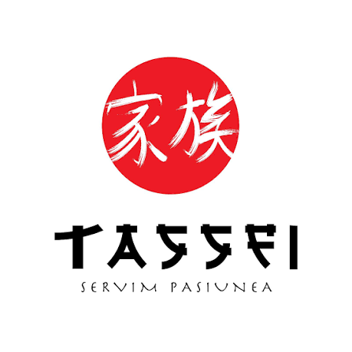
Tassei Sushi Robata
În inima Timișoarei, Tassei Sushi Robata aduce eleganța Japoniei într-un spațiu minimalist și rafinat. Sushi autentic, ramen și preparate la grătarul robata, într-o atmosferă caldă și primitoare, unde tradiția japoneză se împletește cu o notă modernă.
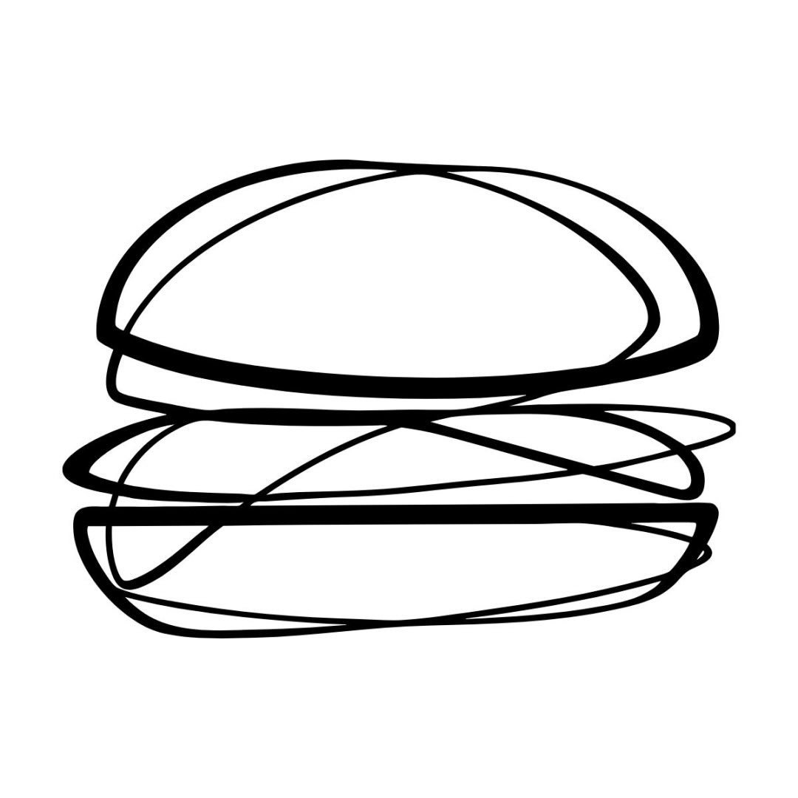
Get Smashed
Burgeri smashed, stil clasic New York, pregătiți pe loc din ingrediente proaspete. Get Smashed aduce în Timișoara rețete simple, bine făcute, într-un cadru relaxat, perfect pentru o masă rapidă sau o ieșire cu prietenii.
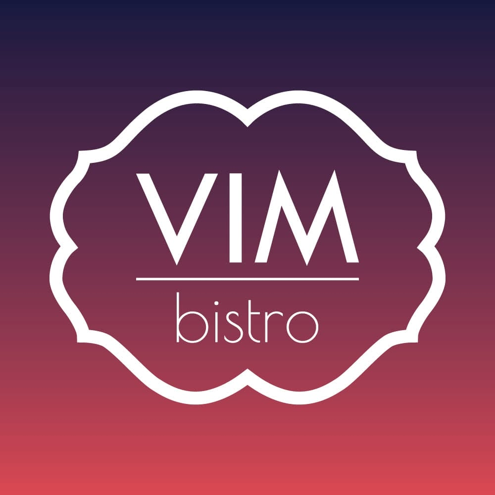
VIM bistro
Un colț boem și primitor în inima Timișoarei, specializat în mic dejun și brunch. Omlete, bagel-uri, croissante și cafea bună, într-un decor cald și intim, ideal pentru o dimineață liniștită sau un weekend relaxat.
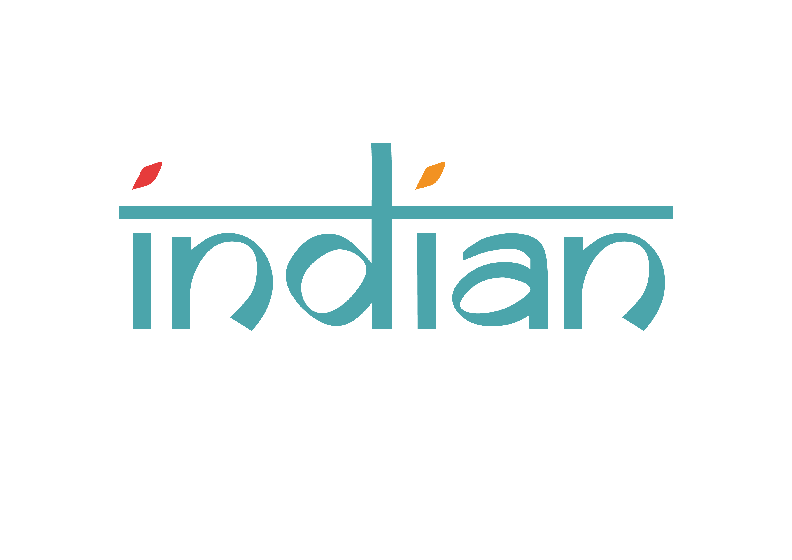
Indian Bistro
Bucătărie indiană autentică în inima Timișoarei, cu arome intense și preparate tradiționale precum butter chicken, tikka masala sau naan proaspăt. Nivelul de picant se alege după gust, într-o atmosferă primitoare, perfectă pentru o masă memorabilă.
Dr. Alina Stasak
Dermatologie și estetică medicală în Timișoara, cu diagnostic precis și îngrijire completă a pielii. De la consultații dermatologice la tratamente cu laser și proceduri estetice moderne, Dr. Alina Stasak îmbină expertiza medicală cu tehnologia avansată, pentru rezultate naturale și de durată.
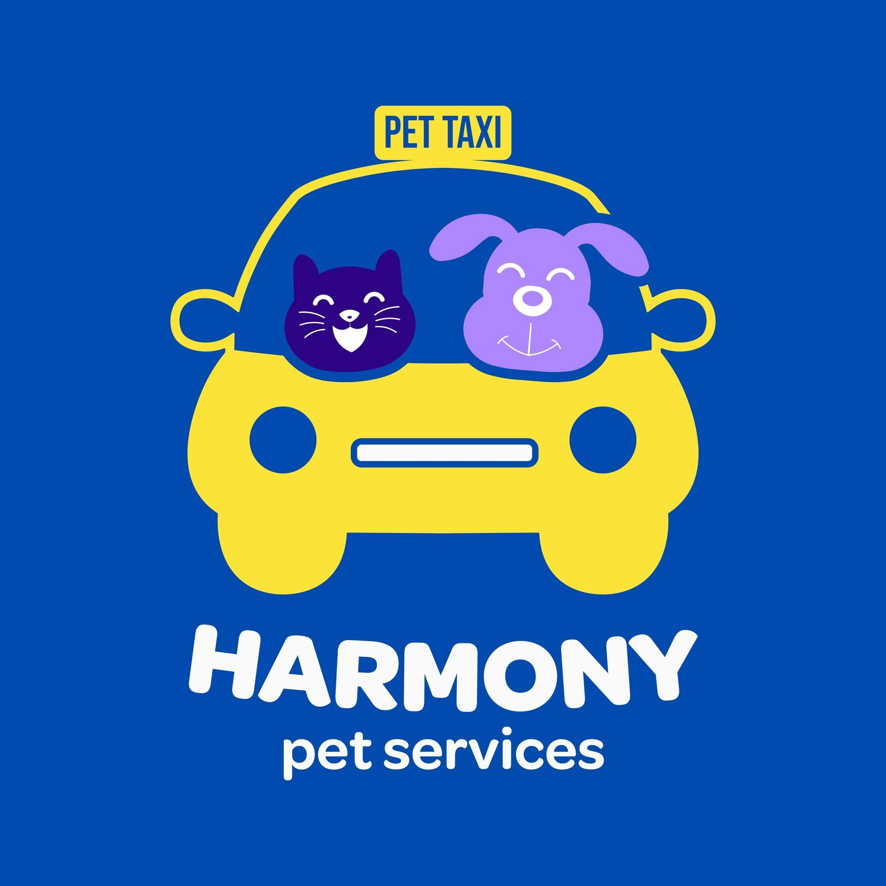
Harmony Pet Services
Harmony Pet Services vine în sprijinul iubitorilor de animale din Timișoara cu servicii dedicate câinilor și pisicilor, oferite cu grijă, răbdare și multă dragoste. De la transport sigur cu Pet Taxi și plimbări pentru căței, până la pet sitting la domiciliu și cumpărături pentru animăluțe, Harmony Pet Services îi ajută pe stăpâni să aibă grijă de prietenii lor necuvântători chiar și atunci când timpul nu le permite. O echipă dedicată, cu experiență și o adevărată pasiune pentru animale, pentru ca fiecare blănos să fie pe mâini bune.